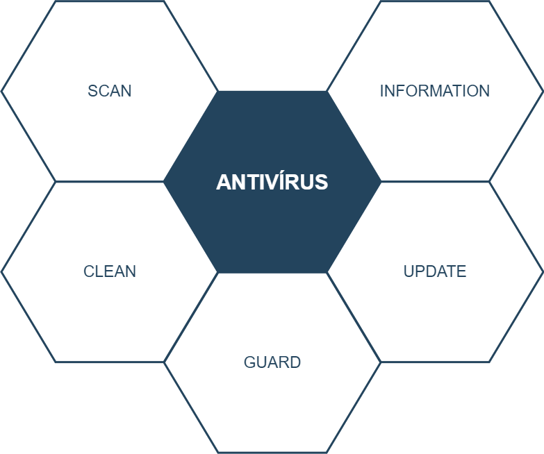
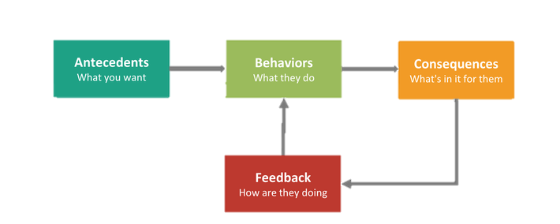

Antivírus je počítačový program, ktorého cieľom je identifikovať a eliminovať
počítačové vírusy. Taktiež môže zistiť a odstrániť adware, spyware a malware.
Prvé počítačové vírusy priniesli tlak na počítačových inžinierov, ktorí museli rýchlo vyvinúť prvé
počítačové antivírusy. V roku 1988 vírusy upútali pozornosť médií. Niektorí z najlepších antivírusových
výskumníkov, začali svoju činnosť už pred rokom 1989. Rok 1988 bol teda rokom, v ktorom sa objavili
programy typu antivírusových balíkov. Zatiaľ všetky antivírusové programy boli vytvorené na detekciu a
odstránenie určitého typu vírusu.
Súčasti antivírusu
SCAN - ponúka detekciu a rozpoznanie eventuálnych vírusov. Existuje viacero možností, ako rozpoznať antivírus.
Medzi tie najčastejšie používané zaraďujeme vyhľadávanie vírusov pomocou databázy, heuristické vyhľadávanie, kontrolný
súčet alebo aktívne monitorovanie programov.
CLEAN - poskytuje programu dovolenie odstrániť detektované vírusy. Túto operáciu možno vykonať viacerými
metódami, avšak aktuálne najpoužívanejšie sú dve z nich. Tou prvou je opravenie vírusového súboru, čo je možné odstránením
podpisu vírusu, izolovaním alebo odstránením napadnutého súboru. Druhou metódou je heuristická analýza, ktorá je výhodná
najmä pri identifikovaní vírusov, ktoré ešte nie sú známe.
GUARD - umožňuje antivírusovému programu, aby nainštaloval špecifické štruktúry do pamäti počítača, ktoré umožnia ľahšie
rozpoznanie, obmedzenie penetrácie alebo blokovania pred novými typmi vírusov.
UPDATE - zaisťuje sťahovanie aktualizácií o nových typoch vírusov z internetu.
INFORMATION - ponúka používateľovi prístup k dátam o vírusoch, ktoré program už pozná. Takéto dáta obsahujú typ vírusu,
jeho vlastnosti, spôsob pôsobenia a možnosti eliminácie.

Metódy detekcie vírusov
Existuje viacero metód na detekciu a ochranu pred vírusmi. Antivírusové programy využívajú
rôzne prístupy, prípadne ich kombinácie.
Antivírusové skenery
Detekcia založená na správaní
Heuristická analýza
Sandbox technológia
Antivírusové skenery
Sú najstaršou súčasťou každého antivírusového softvéru. Skenery umožňujú vykonanie procesov
skenovania, počas ktorého sú vyhľadávané vírusy v počítači. Vďaka špeciálnym metódam detekcie
v dnešnej dobe dokážu skenery rozpoznať vírusy napriek tomu, že nie sú zaznamenané vo vírusovej databáze.
Vírusová databáza
Vírusová databáza je súhrnom informácií, na základe ktorých dokáže anitírusový skener
vyhľadať v počítači známe vírusy. Vírusová databáza býva označená dátumom vydania, a preto,
aby bola užitoćná je potrebná jej pravidelná aktualizácia.
Typy skenerov
On-demand
skenuje počítač až potom ako o to požiada používateľ
dokáže prehľadávať aj skomprimované súbory
najmä sa využíval v dobe OS MS-DOS
On-access
je plne automatický a neustále vyhľadáva vírusy v dátach, s ktorými príde používateľ do styku
skenuje spustené súbory/programy, otvárané a ukladané súbory
Metóda skenovania
ntivírusové skenery využívajú metódu skenovania, ktorá je založená na porovnavaní reťazcov
kódov známych vírusov, zapísaných vo vírusovej databáze, s reťazcami kódu skenovaných súborov. V prípade
nájdenia vírusu, antivírusový program ohlási jeho nájdenie a označí ho podľa názvu daného kódu vírusu v
databáze. Tento spôsob ochrany je veľmi spoľahlivý, avšak je závislý od aktuálnosti vírusovej databázy.
Najväčšou výhodou tejto metódy je rýchlosť a preto sa používa pre pravidelné kontrolovanie pevného disku.
Kontrola súborov
Antivírusový skener spraví kontrolu predtým ako dôjde k spusteniu/otvoreniu súboru. Ak obsahuje vírus,
skener k danému súboru zablokuje prístup. On-demand a On-access skenery vykonávajú kontrolu len na súboroch
alebo v systémových oblastiach, ktoré sú pre vírusy nejako zaujímavé. Zistenie, či je daný súbor zaujímavým
pre vírusy skenery riešia:
Prezeraním všetkých súborov (*.*)
kde môže dôsť k falošným poplachom
je najpomalšie skenovanie
Prezeraním súborov podľa dlhého zoznamu masiek (*.exe, *.doc, *.xls, *.src, ...)
vírus sa môže vyhnúť detekcii v prípade, že infikuje súbor *.exe, ktorý má neštandartnú
príponu (iná prípona ako .exe)
je najrýchlejšie skenovanie
Prezeraním hlavičiek všetkých súborov
zvyčajne táto metóda je kombinovaná s druhou metódou
jej rýchlosť je niekde medzi prvou a druhou metódou
Detekcia založená na správaní
Vzhľadom na to, že vírusové databázy neobsahujú záznamy o každom malwari, tak sa začal presadzovať iný prístup
rozpoznávania škodlivých kódov. Antivírusové programy, ktoré majú detekciu vírusov založenú na pozorovaní ich správania sú
schopné odhaliť oveľa väčšie množstvo vírusov za výrazne kratší čas. Jednotlivé hrozby posudzujú na základe toho, aké správanie
sa od daného programu, alebo časti kódu očakáva. Toto jeho očakávané správanie analyzujú ešte predtým ako je program spustený v
počítači. Takýmto spôsobom dokážu odhaliť podozrivé aktivity a označiť kód za škodlivý, aj keď predtým ešte nebol známy. Existuje
viacero prístupov k tomu, čo možno označiť za podozrivé správanie. Medzi tie najbežnejšie príklady patrí odhalenie sandboxu,
znefunkčnenie bezpečnostných ovládacích prvkov alebo inštalovanie rootkitov.
Statická a dynamická analýza
Analyzovanie správania môže byť dynamické aj statické. Ak sa potenciálne škodlivé správanie analyzuje priamo pri
vykonávaní kódu tak ide o dynamickú analýzu. Na druhej strane, ak sa potenciálna hrozba hľadá v rámci kódu a štruktúry objektu
pred jeho samotným spustením, tak ide o statickú analýzu. Tú možno vykonať v reálnom čase, čo je veľkou výhodou pri detekcii
vírusov, avšak dynamická analýza potrebuje čas na vykonanie všetkých operácií, ktorými daný kód disponuje.
Spôsob detekcie
Pozorovanie správania je založené na zaznamenaní a vyhodnotení každého riadku kódu, ktorý je potenciálne považovaný
za škodlivý kód. Analyzujú sa všetky požiadavky na prístup k súborom, všetky procesy a spojenia nadviazané takýmto programom. V praxi
to znamená, že každá inštrukcia kódu je vykonaná na úrovni operačného systému alebo iného zahrnutého programu. Takýmto spôsobom
si antivírusový program zapamätá všetky podozrivé aktivity a následne keď sa na ne pozrie ako na celok, tak vie určiť, či ide
o škodlivý kód. Vzhľadom na to, že celá analýza kódu sa vykonáva ešte pred samotným spustením programu, tak takéto typy antivírusov
dokážu zabrániť infikovaniu zariadenia ešte pred samotným spustením škodlivého kódu.

Výhody
Výhodou analýzy správania oproti vírusovej databáze je odhalenie škodlivých kódov v reálnom čase ako ja
väčší rozsah hrozby, ktorá môže byť takýmto spôsobom eliminovaná. Preto v súčastnosti je detekcia správania viac využívaná avšak
ani táto metóda nie je absolútne účinná. Preto je vhodné ak antivírusové programy kombinujú prístup detekcie správania s porovnávaním
s databázou, aby sa tým dosiahla čo najvyššia účinnosť daného softvéru.
Využitie
Tento spôsob detekcie sa využíva najmä pri ochrane pred novými ešte neodhalenými druhmi malwaru, pri identifikácií
konkrétnej inštancie malwaru, ktorý nebol hromadne použitý a taktiež pri získavaní informácií o tom, čo daný kód po spustení spraví
a či ho možno považovať za hrozbu.
Heuristická analýza
Heuristická analýza je relatívne nová metóda detekcie vírusov.
Cieľom heuristickej analýzy je rozbor kódu, pričom hľadá postupy pre typickú alebo podozrivú činnosť.
Na rozdiel od antivírusových skenerov nevyužíva databázu vírusov, ale je založená na logickej analýze
podozrivého kódu a porovnáva sa s kódom vírusov. Jej výhodou je je schopnosť detegovať
vírus nezávisle na tom, či je známy alebo nie. Nevýhodou je popri časovej náročnosti pri vyhľadávaní aj
citlivosť na falošné poplachy. Ak sa nájde vírus a program obshajue tzv. plnú heuristickú analýzu,
vtedy sa antivírusový program pokúša napodobniť činnosť počítača pri spustení programu, ktorý obsahuje
vírus. Touto metódou dokáže antivírusový program odhaliť úplne nový vírus. Týmto sa však môžu označiť ako
nakazené aj iné súbory, ktoré sú v poriadku.
Sandbox technológia
Sandbox technológia bola uvedená na trh z dôvodu neustále sa vyvíjajúcich a tažšie
rozpoznateľných malwarov. Táto technológia predstavuje ďalšiu vrstvu ochrany pred škodlivými kódmi pridanú ku
antivírusovým nástrojom pre zabezpečenie vyššej úrovne ochrany.
Spôsob detekcie
Sandbox technológia pracuje na podobnom princípe ako detekcia založená na správaní. Avšak na
rozdiel od analýzy kódu po riadkoch, Sandbox poskytuje malwaru priestor na "hranie", pričom analyzuje jeho správanie.
Dovolí kódu vykonať všetky operácie až pokým nedôjde do štádia vykonávania shell kódu, čím zabezpečí odhalenie čo najväčšieho
množstva potenciálnych hrozieb. Takýmto prístupom dokáže odhaliť zámer kódu aj keď nie je súčasťou databázy a na prvý pohľad
sa jeho správanie nejaví ako škodlivé.
Spôsoby prelomenia Sandboxu
Vzhľadom na to, že Sandboxy sú v súčastnosti už rozšírené a dobre známe, tak existujú aj spôsoby akým sa dajú
obísť. Tieto spôsoby majú spoločnú jednu vlastnosť a to, že sa snažia zabrániť Sandboxu, aby vykonal konkrétnu škodlivú časť
daného kódu a tým pádom odhalil daný malware. Preto dnes existujú malwary, ktoré dokážu analyzovať Sandbox, v ktorom sa nachádzajú,
pochopiť správanie systému a následne ho obísť. Potom škodlivú časť svojho kódu vykoná až keď si je istý, že sa nachádza mimo
Sandboxu
Prostredie Sandboxu
Sandboxy sú virtuálne prostredia, ktoré sú navrhnuté tak, aby sa čo najviac podobali reálnemu používateľskému prostrediu.
Avšak napriek tomu existujú rozdiely, pomocou ktorých vie malware identifikovať, či sa nachádza v prostredí Sandboxu alebo nie. Napríklad
malware sa pokúsi zistiť, či beží vo virtuálnom prostredí alebo nie, prípadne hľadá identifikačné vlastnosti Sandboxu. Môže ísť o rôzne
konfiguračné súbory, spsutiteľné súbory, procesy, klúče registra, adaptéry sieťových zariadení a ďalšie. Akonáhle malware nejaký znak
virtuálneho prostredia spozoruje, tak zamedzí vykonaniu škodlivej časti kódu.
Zneužitie limitácií Sandboxu
Aj keď technológia Sandboxu sa môže zdať sofistikovaná, tak má aj svoje limity, ktoré môžu byť útočníkmi zneužité. Napríklad môže ísť o:
Prekročenie veľkosti súboru, ktorý dokáže Sandbox spracovať
Použitie súboru s príponou, ktorú Sandbox nevie detekovať
Malware má zašifrovaný alebo pozmenený svoj kód a Sandbox ho nevie analyzovať